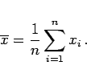

Inhalt Index DeskTop Bronstein

 Wahrscheinlichkeitsrechnung und Mathematische Statistik Mathematische Statistik Stichprobenfunktionen Stichprobenfunktionen
Wahrscheinlichkeitsrechnung und Mathematische Statistik Mathematische Statistik Stichprobenfunktionen Stichprobenfunktionen


Der Mittelwert  der Zufallsveränderlichen Xi lautet:
der Zufallsveränderlichen Xi lautet:
| (16.124a) |
Im konkreten Fall lautet der Mittelwert  zur Stichprobe
zur Stichprobe
|  | (16.124b) |
Häufig ist es vorteilhaft, zur Berechnung des Mittelwertes einen Schätzwert x0 einzuführen, der beliebig gewählt werden kann, aber nach Möglichkeit in der Nähe des zu erwartenden Mittelwertes  liegen soll. Wenn z.B. in großen Meßreihen die xi mehrstellige Zahlen sind, bei denen sich lediglich die letzten Stellen von Meßwert zu Meßwert ändern, ist es einfacher, mit den kleineren Zahlen
liegen soll. Wenn z.B. in großen Meßreihen die xi mehrstellige Zahlen sind, bei denen sich lediglich die letzten Stellen von Meßwert zu Meßwert ändern, ist es einfacher, mit den kleineren Zahlen
| zi = xi - x0 | (16.124c) |
| (16.124d) |